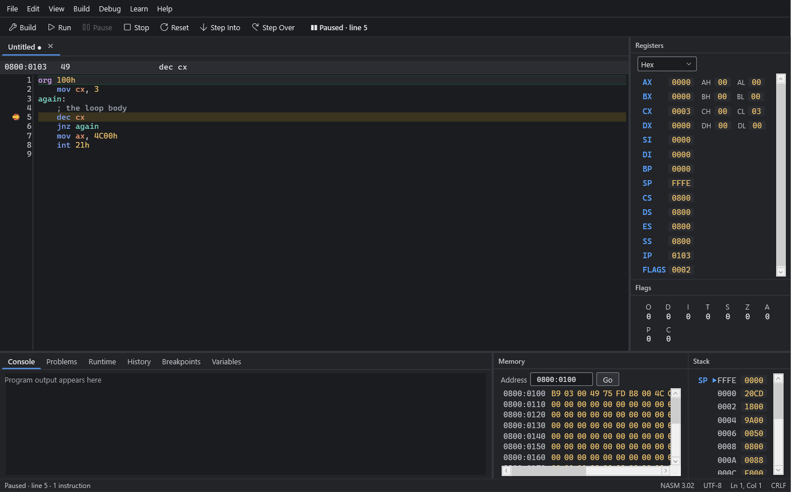
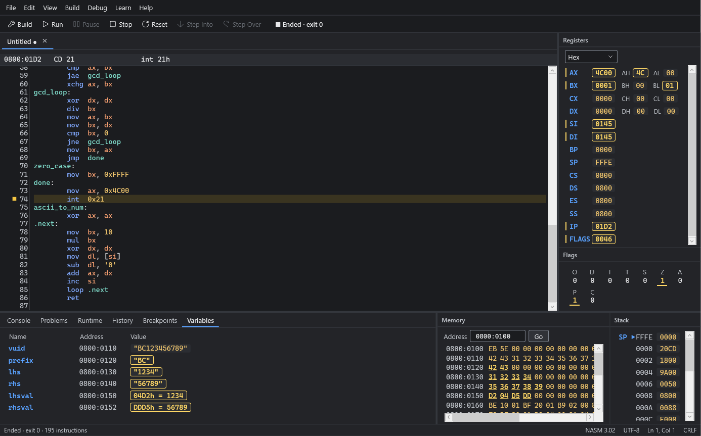

v1.0.0 / 8086 · NASM · DOS .COM / Windows
Step through 8086 code and watch every register change
Assembly Studio is a free Windows IDE for learning assembly language. Write a program, build it with the bundled NASM, run it on an emulated 8086, and follow it one instruction at a time. One window, fully offline.
- org 100h
- mov cx, 3
- again:
- dec cx
- jnz again
- mov ax, 4C00h
- int 21h
- IP
- 0100
- CX
- 0000
- AX
- 0000
- ZF
- 0

What's inside
No DOSBox, no command line, nothing to configure. Open a sample and press F5.
- Editor
- NASM syntax highlighting, line numbers and the current line, undo and redo, find and replace, go to line, zoom, tabs. Unsaved edits survive a crash.
- Build
- One key builds with the bundled NASM 3.02. Errors and warnings appear on their source lines, each with a plain next step, and code that looks like MASM or TASM gets a hint.
- Run
- Programs run inside an emulated 8086 PC with 1 MB of memory and can't touch your files or network. An instruction budget pauses endless loops, so the IDE never freezes.
- Debug
- Step Into, Step Over and breakpoints, the current instruction with its disassembly, and a history of what just ran.
- Panels
- Registers with their 8-bit halves in hex, decimal or binary; flags; memory in hex and ASCII; the stack; and your variables by name. Every change is marked.
- I/O
- DOS text services (INT 21h input and output, INT 20h, Ctrl-C) with a console that takes keyboard input.
- Learn
- 8 sample programs, 5 tutorials, an instruction reference and help pages, all built in.
- Access
- Every workflow by keyboard, a visible focus, screen-reader names, and dark, light and high-contrast themes.
Your data, by name
The Variables panel lists every data label in your program with its address and current value: text in quotes, bytes and words as numbers. When a value changes it's marked, and the same bytes light up in the memory view.
Every value comes from the emulated machine. Nothing is guessed.

Running in a minute
- Install and start Assembly Studio.
- Open the Learn sidebar with Ctrl Alt L and choose Hello, World.
- Press F5 to build and run. The output appears in the Console.
- Press F11 to step one instruction at a time.
org 100h ; .COM programs start at 100h
mov dx, message ; DS:DX = the text
mov ah, 09h ; DOS: print up to '$'
int 21h
mov ax, 4C00h ; DOS: exit with code 0
int 21h
message db 'Hello, World!', 13, 10, '$'What it supports
Version 1.0 does one thing well: classic 8086 programs for DOS.
- Processor
- Intel 8086, real mode, 1 MB. Every documented instruction except IN, OUT and the 8087 (ESC) instructions.
- Programs
- DOS .COM programs up to 65,278 bytes, in NASM syntax. MASM and TASM syntax isn't accepted.
- Services
- INT 21h functions 00h, 01h, 02h, 07h, 08h, 09h, 0Ah and 4Ch, INT 20h and Ctrl-C. No files, disks, clock or BIOS services.
- Windows
- 64-bit Windows 11, or Windows 10 21H2 or later. Version 1.0.0 was tested on Windows 11.
See the known limitations and the release notes.
Download
Assembly Studio 1.0.0 for 64-bit Windows 11, or Windows 10 version 21H2 or later. About 190 MB of disk space; the .NET runtime and NASM are included.
AssemblyStudio-1.0.0-setup.exe 53.5 MB16ac15358b80d2d12425be5ed05bce5e89dbf2a453514cd5dfaa8ce7153f3d83
Windows may warn you
The installer isn't code-signed yet, so SmartScreen can say "Windows protected your PC". Choose More info, then Run anyway. To check the file first, run Get-FileHash .\AssemblyStudio-1.0.0-setup.exe in PowerShell and compare it with the hash.
- Installs for your account; no administrator rights
- Downloads nothing, during installation or afterwards
- Uninstalling keeps your source files and settings